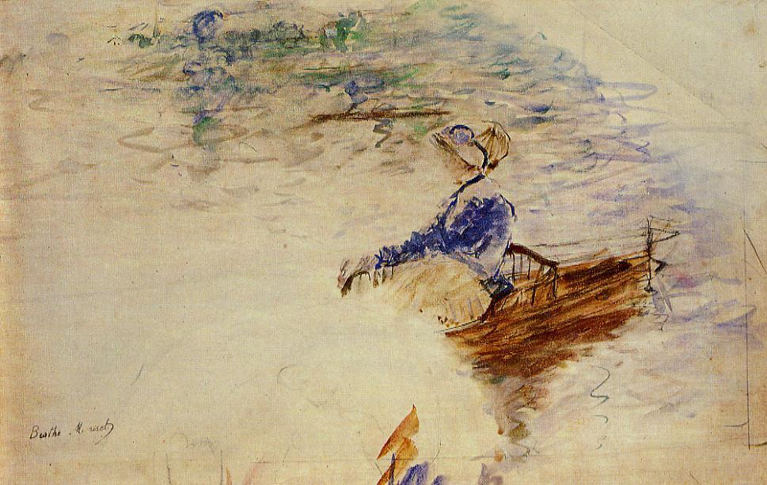

Tags: rivers-and-waterfalls, boats-and-ships
Style: Impressionism
Artist: Morisot Berthe
Title: Young Woman in a Rowboat, Eventail
Year: 1891
Genre: genre painting
Categories: ant (12.1%); tray (9.8%); envelope (9.2%); book_jacket (8.4%); honeycomb (6.2%)